研究团队
肖文 创始院长
博士 研究员
1999年硕士毕业于中科院水生生物研究所；2004年博士毕业于中科院昆明动物研究所，毕业后留所工作。2007年带领团队在大理大学创立了东喜玛拉雅研究院。
主要成果
- 中国三江并流区域生物多样性保护和利用云南省创新团队带头人
- 云南省中青年学术技术带头人
- 滇西北文化生态中心常务副主任
- 中国生态学会流域生态学专业委员会副主任委员
- 中国动物学会灵长类分会常务理事
- 中国科学探险协会理事
- 中国自然资源学会国家公园与自然保护地体系研究分会理事
- IUCN/SSC灵长类专家组成员
- 迄今发表论文200篇以上，其中SCI论文100篇以上
研究目标
- 一直致力于在东喜玛拉雅构建流域生态系统的长期全要素监测体系，研究和多样性（环境、生物、人类共同体）的起源、演化和维持机制，探索生命共同体的可持续发展途径。
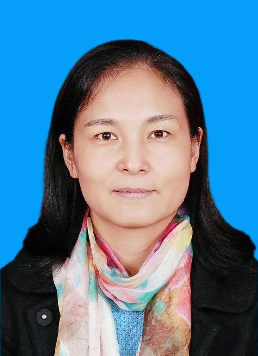
杨晓燕 教授
博士
2006年博士毕业于四川农业大学动物医学专业。同年进入大理大学工作，2018年调入东喜玛拉雅研究院。
主要成果
- 发表科研论文70余篇，其中SCI论文32篇，C刊及北核21篇
- 获批专利3项
- 参编教材1本
- 主持国家级自然科学基金3项
- 主讲省双一流课程1门《微生物学》，获大理大学教学质量奖特等奖2次
研究方向
- 微生物生态学
- 火生态学
- 抗氧化
- 功能食品和药品研发
- 真菌分类学
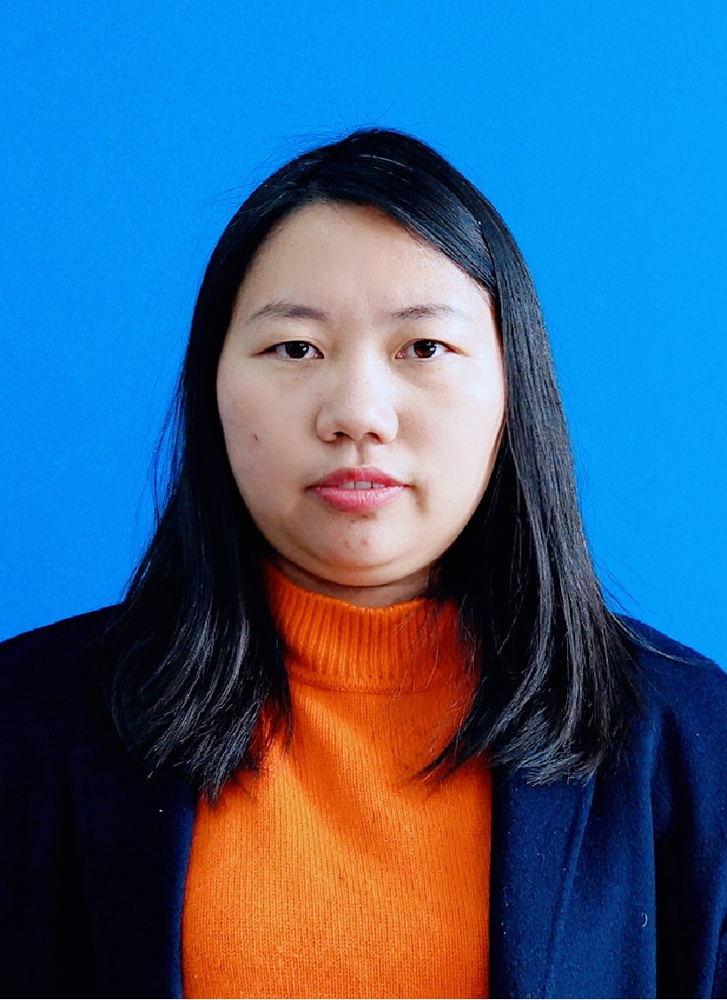
佘容 副研究员
博士
2017年博士毕业于四川农业大学预防兽医学专业；2007年加入上市公司，从事质量检测工作；2018年进入大理大学东喜玛拉雅研究院。
主要成果
- 发表论文31篇，其中第一作者或通讯作者SCI论文9篇，北大核心期刊论文8篇
研究方向
- 微生物生态学，主要研究火干扰下微生物群落构建及其多样性维持机制
- 微生物和植物资源利用与开发，主要进行特殊生境微生物及其活性物质的开发与利用研究
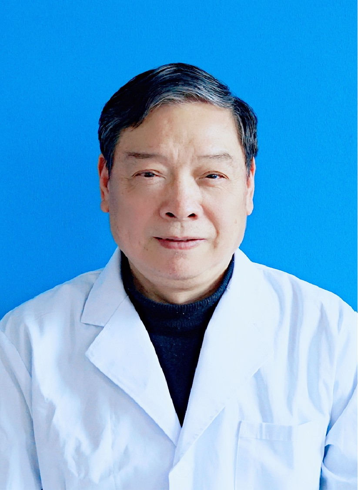
杨旭 客座教授
博士
2001年博士毕业于华中科技大学。华中师范大学桂苑名师。2020年3月接受东喜玛拉雅研究院邀请，成为大理大学客座教授。
主要成果
- 现已发表科研论文658篇，其中131篇SCI论文
- 获得发明专利10余项
- 主编或参编学术专著16本
研究方向
- 环境与健康
- 分子毒理学
- 环境生物学
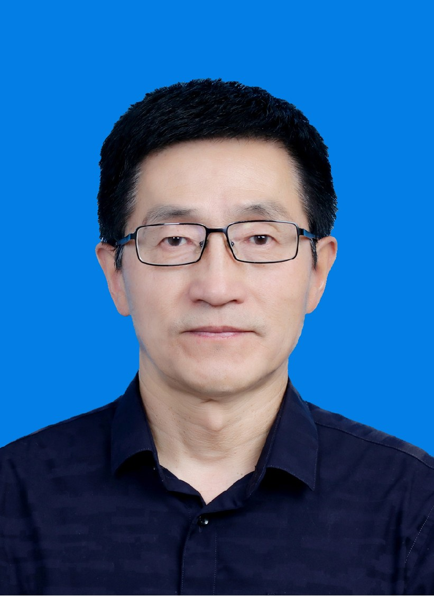
吕跃军 副研究员
硕士
2002年中央党校经济管理专业研究生班毕业，2015年复旦大学社会发展与公共政策学院访问学者，2018年华中师范大学国家文化产业研究中心访问学者，2019年进入大理大学东喜玛拉雅研究院。
主要成果
- 主持国家社科基金项目1项，教育部基金项目1项，云南省哲社规划项目1项，云南省省院省校合作项目1项
- 出版专著2部
- 发表论文40余篇
- 中国民族医药学会远程教育分会常务理事
- 云南省医学会医史学分会副主任委员
- 大理州民族民间医药非物质文化遗产专业委员会主任委员
研究方向
- 文化遗产保护与利用
- 民族医药文化
- 医学人文
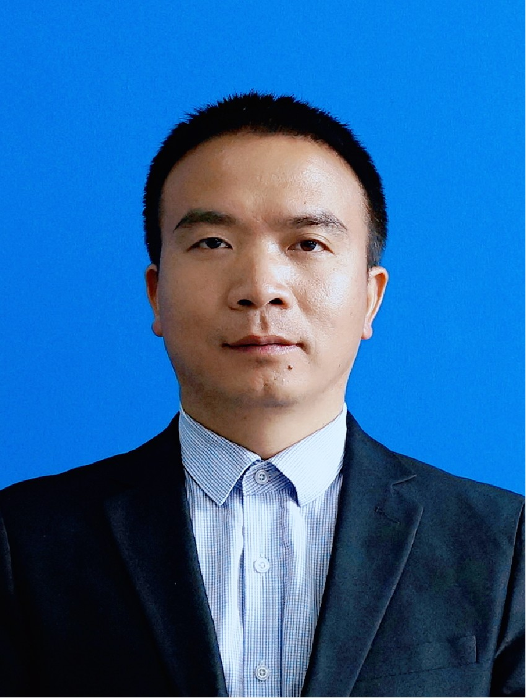
李先福 副研究员
博士
2016年博士毕业于华南农业大学农业昆虫与害虫防治专业;同年进入中国科学院水生生物研究所做博士后。2019年进入大理大学东喜玛拉雅研究院。
主要成果
- 以第一或通讯作者发表论文13篇，其中SCI论文10篇，北大核心2篇
- 获批发明专利1项
- 主持国家基金1项
- 主持横向及其它项目8项
研究方向
- 水生生物行为生态学
- 群落构建和维持机制
- 流域生态学
沐远 副研究员
博士
2019年博士毕业于南京师范大学动物学专业，师从杨光教授，同年进入大理大学东喜玛拉雅研究院工作。
主要成果
- 主持国家自然科学基金、云南省科技厅面上项目等5项，总经费约80万元
- 近3年发表SCI论文10余篇，其中一作或通讯9篇，一作北大核心1篇
- 多个SCI期刊审稿人
- 指导本科生获得国家级、省级大学生创新创业训练项目立项多项
研究方向
- 脊椎动物适应性演化及多样性
- 基于比较基因组学和进化基因组学手段，结合相关实验探究动物对环境的适应性进化机制
黄志旁 研究员
博士
2002-2009年本科和硕士毕业于西南林学院，2015年博士毕业于西北大学动物学专业。2010年进入大理大学东喜玛拉雅研究院。
主要成果
- 云南省"万人计划"青年拔尖人才
- 主持国家自然科学基金项目3项，承担横向项目10余项
- 发表SCI论文30余篇
研究方向
- 灵长类行为生态学与保护生物学：东喜玛拉雅地区灵长类调查监测、行为生态和保护规划等
- 生物多样性与可持续发展：山地区复合生态系统综合监测和区域可持续发展研究
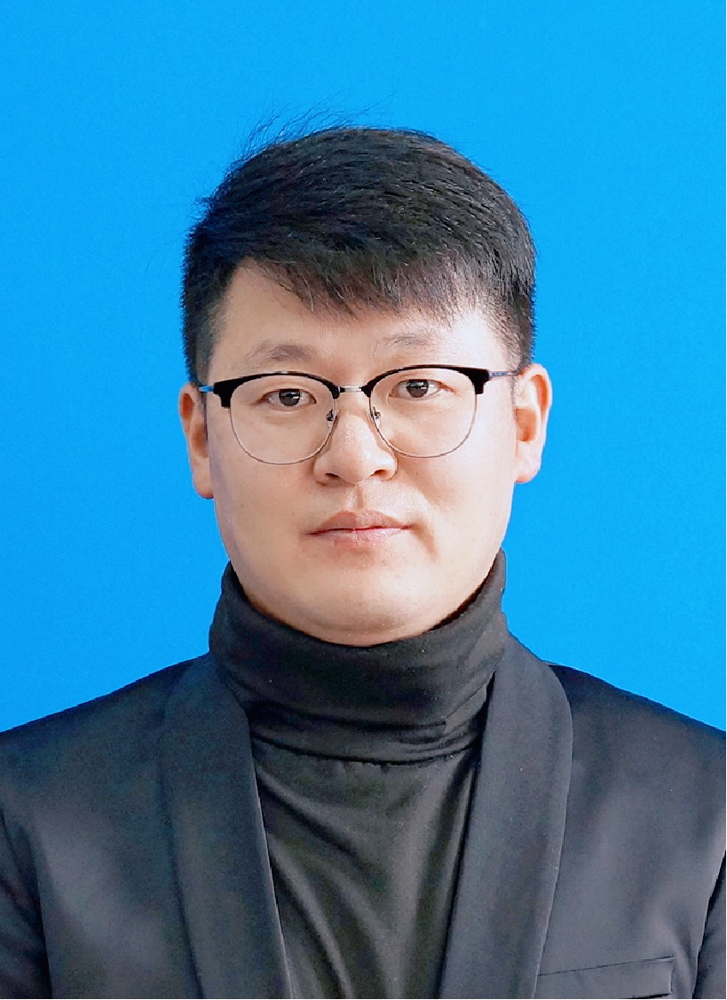
李延鹏 研究实习员
硕士
2014年硕士毕业于西南林业大学野生动植物保护与利用专业。同年进入大理大学东喜玛拉雅研究院，现为华中师范大学生物学专业在读博士。
主要成果
- 以第一或通讯作者发表论文13篇，其中SCI论文10篇，北大核心期刊论文2篇
- 获批发明专利1项
- 主持国家基金1项，横向及其它项目8项
研究方向
- 灵长类行为学，通过灵长类动物的体质及繁殖行为探讨动物适应环境的机制与机理
- 土壤生态学，基于土壤线虫探索区域的生物多样性格局及环境稳定性评价
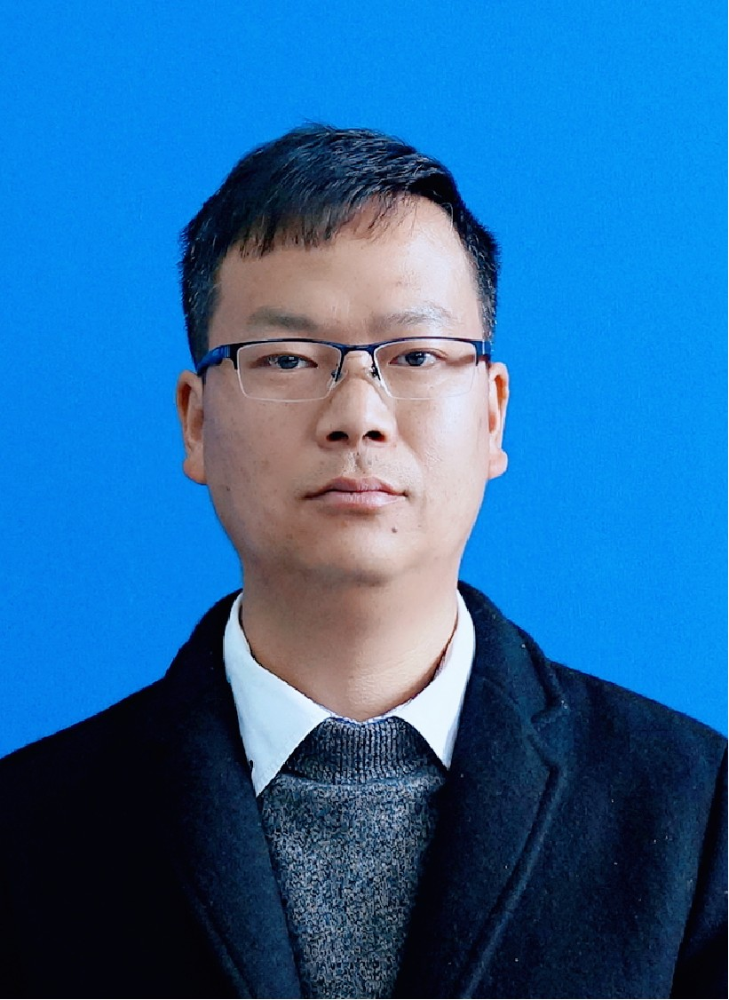
龚佑静 助理研究员
博士
2010年博士毕业于南京农业大学农业昆虫与害虫防治专业。2012-2015年在中科院昆明植物研究所从事博士后研究。2019年进入大理大学东喜玛拉雅研究院。
主要成果
- 以第一或通讯作者发表论文6篇，其中SCI论文3篇，北大核心1篇，普刊2篇
- 获批发明专利2项
- 主持横向项目2项
研究方向
- 昆虫分类及生态学研究
- 火烧迹地昆虫的群落演替及其多样性的维持机制
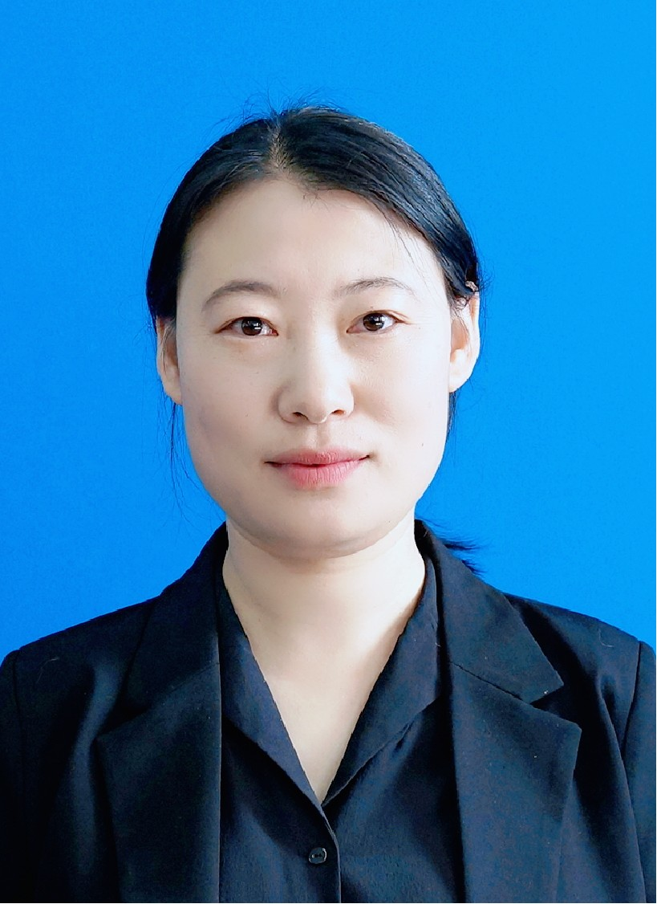
李娜 助理研究员
博士
2019年博士毕业于中国科学院动物研究所生态学专业。2019年进入大理大学东喜玛拉雅研究院。
主要成果
- 代表性论文7篇，以第一或通讯作者SCI论文3篇，核心期刊论文2篇
- 主持云南省科技厅基金1项
研究目标
- 生物多样性、环境多样性以及人类多样性的耦合关系
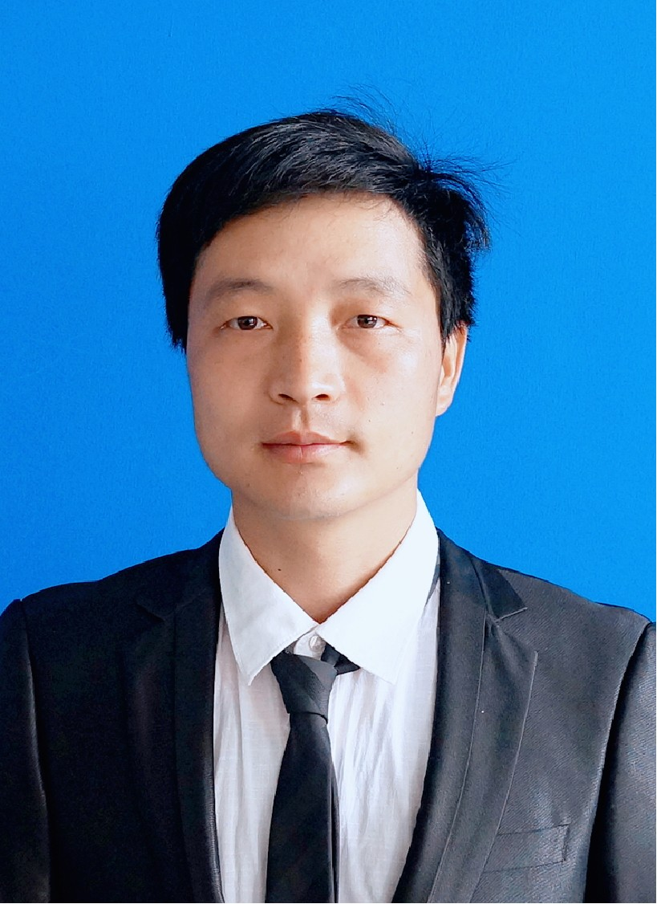
王荣兴 副研究员
博士
2016年博士毕业于中科院昆明动物研究所，动物学专业。2017年，入职大理大学。
主要成果
- 以第一或通讯作者发表论文21篇，其中SCI论文6篇，北大核心论文8篇
- 参编图书3部
- 主持项目18项
研究方向
- 西南山地鸟类群落生态学与恢复生态学
李德品 副教授
博士
2020年博士毕业于北京师范大学动物学专业。2008年进入大理大学东喜玛拉雅研究院。
研究方向
- 农田环境鸟类群落生态学及常见鸟类繁殖生态学研究，重点关注洱海周边农耕区鸟类群落构建及其影响因素，以及常见鸟类繁殖策略及其适应机制。
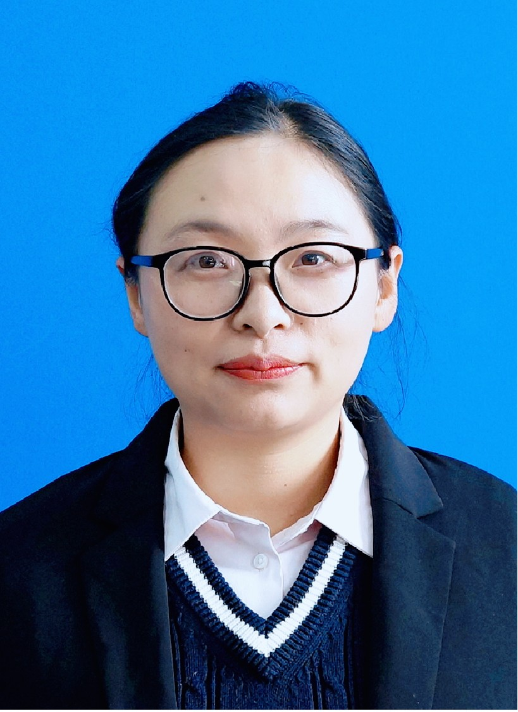
谭坤 助理研究员
博士
2012年硕士毕业于中国科学院动物研究所生态学专业；2019年博士毕业于复旦大学生态学专业。同年入职大理大学东喜玛拉雅研究院。
主要成果
- 以第一或通讯作者发表论文11篇，其中SCI论文4篇，北大核心期刊论文4篇
- 出版译作2部，参编图书2部
- 主持国家自然科学基金1项，其它项目8项
- 指导学生获大学生创新训练项目国家级立项1项，省级立项2项
研究方向
- 流域生态学：以流域视角研究环境因子、微生物、鸟兽、人类文化等多样性格局，以及运动、物种交互作用等机制在其中的作用
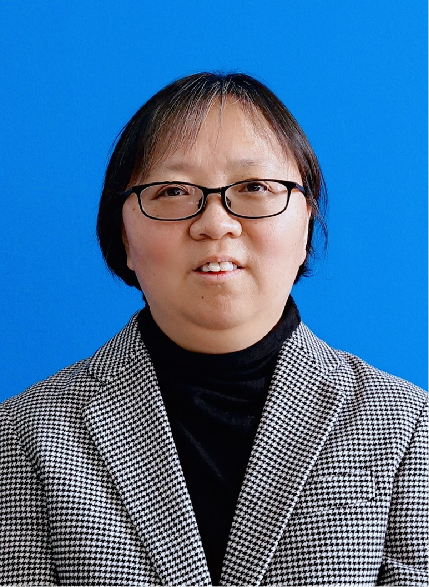
张淑霞 副院长
博士 高级工程师
2006年博士毕业于中科院昆明动物研究所动物学专业，博士毕业后在云南省环境科学研究院工作；2014年进入大理大学东喜玛拉雅研究院。
主要成果
- 已发表SCI论文2篇，中文核心期刊论文7篇
- 参与2项国家自科基金项目
- 指导学生获国家级大学生创新创业训练项目立项1项
- 云南省"挑战杯"大中专学生课外科技节科技作品竞赛省级二等奖1项
研究方向
- 鸟类分类学
- 鸟类系统发育学
- 湿地和森林鸟类生态与保护
房以好 研究实习员
硕士
2013年进入大理大学东喜玛拉雅研究院做科研助理。2020年硕士毕业于西南林业大学野生动植物保护与利用专业。2022年起在复旦大学攻读博士学位。
主要成果
- 以第一或通讯作者发表SCI论文3篇，核心期刊论文1篇
- 主持省教育厅基金1项
研究方向
- 山地红外相机应用方法
- 鸟兽生物多样性分布格局研究：1）森林结构维持鸟兽多样性作用，2）基于3D视角的生物多样性海拔格局
- 两栖爬行动物多样性与分类
赵成法 助理研究员
博士
2019年6月博士毕业于华南农业大学动物遗传育种与繁殖专业。2019年进入大理大学东喜玛拉雅研究院。
研究方向
- 农业文化遗产保护与研究
- 高原特色农业产业发展及可持续化研究
- 三江并流区域农业资源保护、开发及利用
李晓康 科研助理
学士
2017年本科毕业于山东大学，化学工程与工艺专业。2018年进入大理大学东喜玛拉雅研究院，负责研究院日常行政工作。2022年在大理大学攻读硕士学位。
研究方向
- 文化生态学
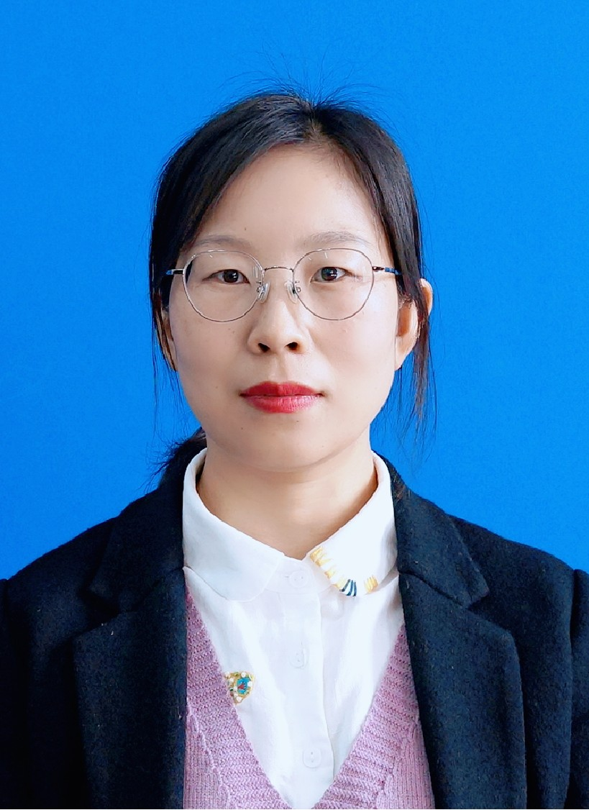
张彩彩 副研究员
博士
2018年博士毕业于中国科学院西双版纳热带植物园植物生态学专业。同年进入大理大学东喜玛拉雅研究院。
主要成果
- 主持国家级项目1项，省级项目1项
- 以第一作者和通讯作者发表SCI论文3篇，北大核心3篇
研究方向
- 植物群落多样性分布格局及其维持机制
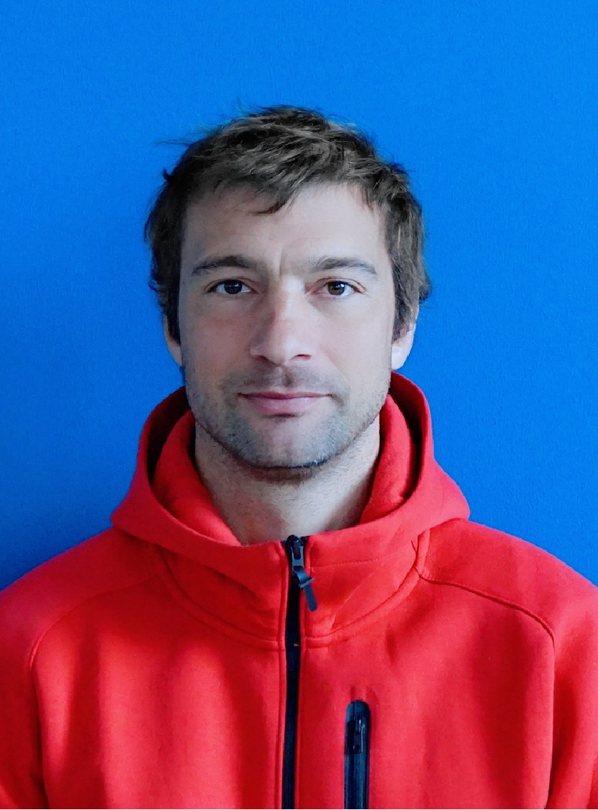
Davide Fornacca
博士
2007年硕士毕业于瑞士日内瓦大学人文地理学专业。2021年博士毕业于日内瓦大学环境科学专业。2013年以来，作为合作研究人员在大理大学东喜玛拉雅研究院工作。
主要成果
- 迄今以第一或通讯作者发表SCI论文7篇
研究方向
- 自然灾害遥感
- 地理信息系统建模
- 生物多样性分布
- 环境风险研究
- 火生态模型